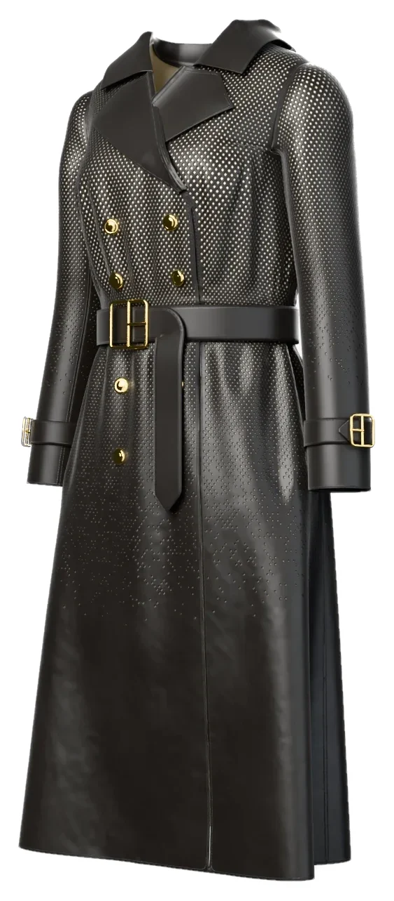
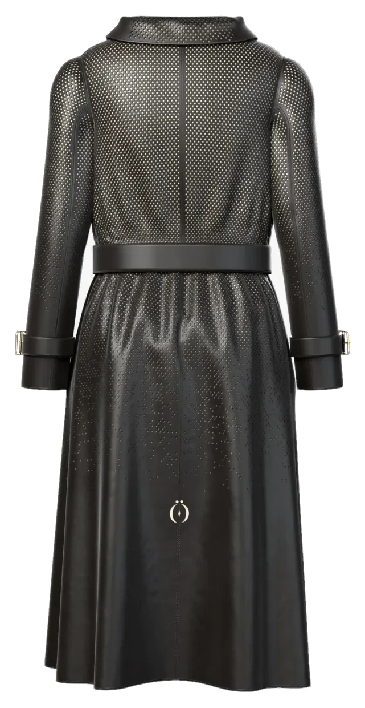
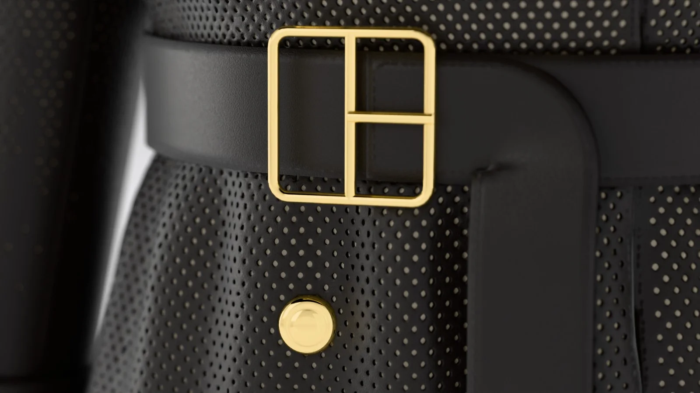
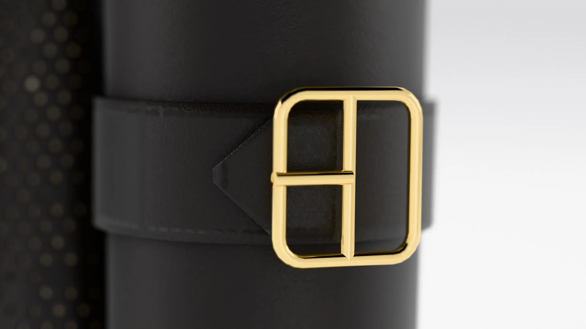
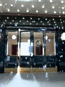

STAND-IN · img/gelosia/front/master.* (departments/apparel/new-pieces-2026-11/build/veil-coat/site/veil_coat_front_16k.png; 16K, 8640 × 15360)
STAND-IN · img/gelosia/front/master.* (departments/apparel/new-pieces-2026-11/build/veil-coat/site/veil_coat_front_16k.png; 16K, 8640 × 15360)
STAND-IN · img/gelosia/three-quarter/master.* (three-quarter view, 8K; 8K, 4320 × 7680)
STAND-IN · img/gelosia/back/master.* (back view, 8K; 8K, 4320 × 7680) STAND-IN · img/gelosia/detail-net/master.* (the net closing to solid leather, 8K close-up; 8K, 7680 × 4320)
STAND-IN · img/gelosia/detail-net/master.* (the net closing to solid leather, 8K close-up; 8K, 7680 × 4320)

Chapter I · Outerwear
Gelosia
Black leather coat
The Siren's veil, let down into a coat. The net open at the collar and shoulders, closing to solid black leather by the hem, cream silk behind it the way light waits behind a curtain.
- LEATHER
- BLACK
- LINING
- CREAM SILK, OPAQUE
- LENGTH
- MID-CALF
- SIZE
- XS · S · M · L · XL
Price on request
ReserveMade to order. Delivery date confirmed by email.
Delivered in the house box.
Details
- Made to order
- Made to order. We email your delivery date once production is confirmed. Cancel for a full refund any time before production starts.
- Returns
- Exchanges within 14 days of delivery, unused and with tags. Returns
- Care
- Wipe with a soft dry cloth. Keep from rain and heat; if it gets wet, let it dry slowly away from a radiator. Store in its dust bag, stuffed with tissue, out of the light. Leather cleaning by a specialist only. Care
- Size
- The measurements

STAND-IN · img/gelosia/world/master.* (the film: the last frame, the world plate (the doors, in the snow); 8K, 5760 × 7680)Where it is going · the film
The doors, in the snow
One door standing open, untouched.
On the screen in the film, the picture is tomorrow: each piece in the place it is going, with one place kept for someone.
The maker’s notes
Gelosia, the Veil Coat
- It begins as black lambskin, 1.0 to 1.2 mm, cut as panels on a flat bed.
- A net of diamonds is cut through each panel: 7.0 by 9.0 mm apart, the narrowest strand 2.7 mm.
- The net is open at the collar and shoulders and closes to solid leather above the knee.
- Every seam and edge keeps 4.5 mm of solid leather, and the two backs mirror each other at the centre seam.
- It closes with eight buttons, a belt and a strap at each cuff, and ends at mid-calf.
- One mark is cut at the centre back, 40.0 mm tall, 29 cm above the hem.
Behind it: opaque cream silk, bonded to the leather, 1.6 mm back from the face. Only cream shows through.
Read the poem